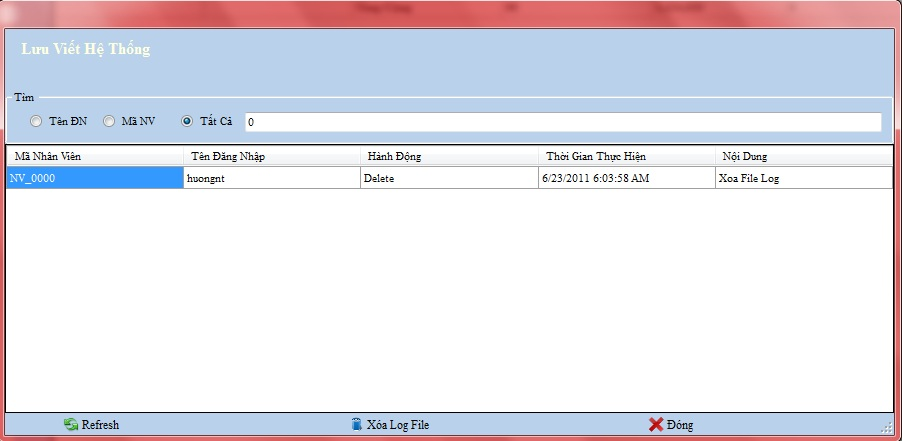

Cách thao tác với quản lý Lưu vết hệ thống:
Vào Hệ thống ->Lưu vết hệ thống

Thanh tiêu đề: Chứa tên của nghiệp vụ đang làm việc.
Tìm kiếm: Chọn loại muốn tìm kiếm , bạn nhập vào tên hàng cần tìm .
Thanh công cụ : Chứa các công cụ phục vụ việc quản lý,theo dõi, bổ sung lưu vết hệ thống
a.Refresh
Chọn nút Refresh hệ thống sẽ làm tươi dữ liệu
b.Xóa
Chọn hàng cần xóa và đúp chuột chọn nút Xóa .
- Chọn Trở về ở thanh công cụ dưới để trở về lưu vết hệ thống.